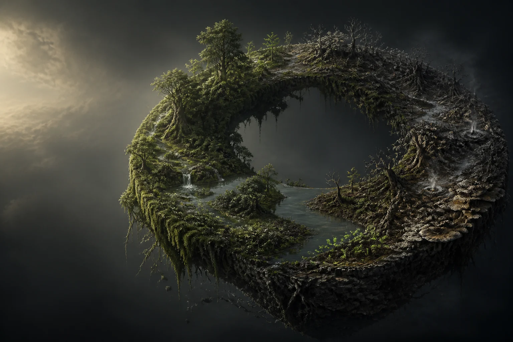

让万物彼此需要
水脉、菌群、植被与兽群共用一套资源。改变一个物种，整片土地都会回应。

这个世界不等待命令
河流会改道，林地会老去，物种会迁徙。读懂变化，然后决定什么值得延续。
选择一个生态阶段，观察世界如何回应。
土壤正在苏醒
倒下的树成为菌群的家。洪水带走旧土，也送来新的种子。世界会记住你的每次选择。
真正稳定的生态，依赖无数微小关系。
水脉、菌群、植被与兽群共用一套资源。改变一个物种，整片土地都会回应。
修复不一定是答案。有时撤退、等待和放手，才能留下更坚韧的生态。
每次循环都会留下物种适应、土壤变化与玩家选择。下一轮从来不是简单重置。